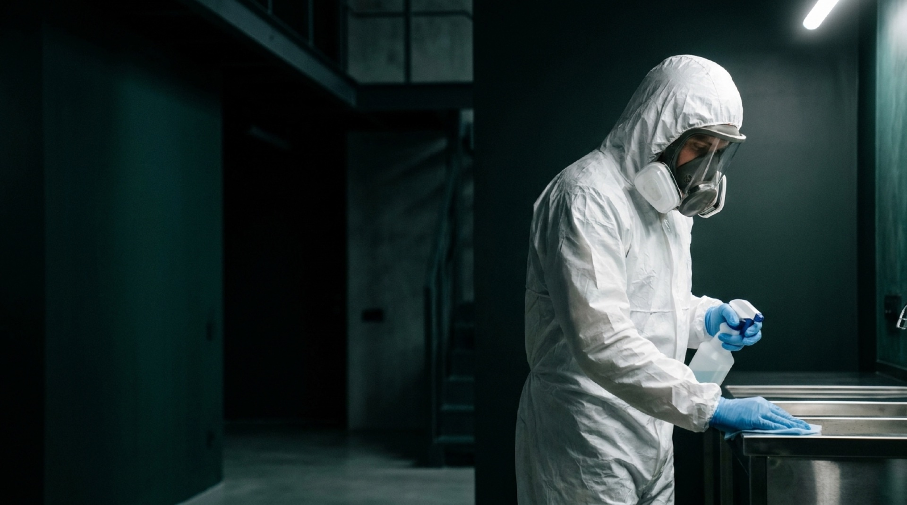
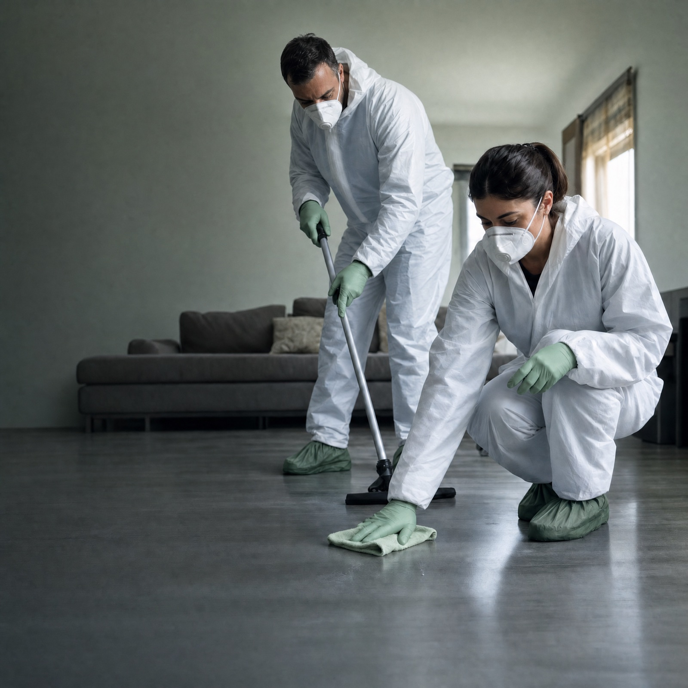
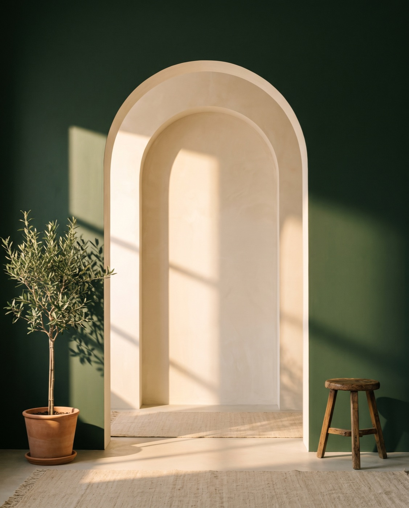

Versijos
Spustelėkite versiją, kad atvertumėte gyvą, naršomą svetainę.

Peržiūrėti
Peržiūrėti
Peržiūrėti
Kaip peržiūrėti: spustelėkite versiją, tada naršykite meniu ir mygtukus kaip įprastoje svetainėje. Tai koncepcijos peržiūra — telefono numeris, el. paštas ir domenas dar laikini.